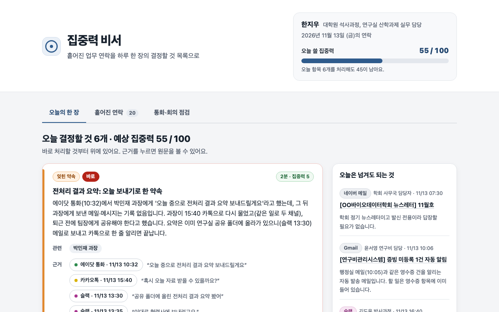

메일 4개, 카톡·슬랙, 통화 녹음, 회의록을 놓쳤을까 봐 하나씩 열어 봅니다.
무엇을 해야 하는지 알려고 긴 메일, 스레드, 통화 전사를 다시 읽습니다.
교수님, 상사, 거래처마다 호칭과 존댓말이 달라 첫 문장에서 멈춥니다.
통화에서 한 "오늘 중으로 보내드릴게요"를 따로 기억해 둬야 합니다.
Gmail · 네이버 메일 · 네이버웍스 · 아웃룩
카카오톡 · 슬랙
에이닷 통화
클로바노트 · Tiro · 다글로
사람: 메일 주소, 카톡 이름, 통화 상대를 한 사람으로
약속: 내 약속, 상대 약속, 기한
일: 채널별 최신 날짜·장소·금액
오늘 결정할 것만 카드로
카드마다 근거 원문과 시각
답장 초안 두 개 (정중하게 · 간결하게)
집중력 합계 / 하루 예산 100
첫 화면. '바로' 카드부터 읽고 집중력 55 / 100을 확인합니다.
근거 칩을 누르면 원문 전체가 열리고 인용 문장이 강조됩니다.
정중하게 · 간결하게 중 고르고 복사. 원래 앱에서 보냅니다.
내 약속과 기한 확인. 전사를 붙여 넣으면 약속·질문·미정·날짜를 찾습니다.

| 서비스 | 외부 연결 현실 | 집중력 비서의 방법 |
|---|---|---|
| 네이버 메일 | 2025.6.24부터 POP3/IMAP에 2단계 인증과 앱 비밀번호 필수 | IMAP 연결 (다음 단계) |
| 네이버웍스 메일 | POP3/IMAP은 Standard 이상 요금제만 | 요금제 확인 후 IMAP |
| 슬랙 | 공식 MCP 연결에 워크스페이스 관리자 앱 승인 필요 | 승인받은 워크스페이스부터 |
| 카카오톡 | 외부 프로그램이 대화를 읽는 공식 통로 없음 | '대화 내용 내보내기' 파일 가져오기 |
| Tiro | 공식 MCP 연결 제공 | MCP로 회의록 가져오기 |
| 클로바노트 | 음성 기록을 파일로 내려받기 가능 | 내려받은 파일 가져오기 |
requirements: 사용자 스토리 5개, EARS 인수 조건 22개
design: 화면·데이터 구조·엔진
tasks: 작업 8개
항상: product · tech · structure
fileMatch: assistant-rules는 data/*.json에만 (장부·무게·말투 규칙)
저장 시: 비밀 정보 점검, 샘플 데이터 정합성, 엔진 테스트
수동: 제출 전 점검
화면 · 데이터 · 엔진 · 문서를 동시에. spec과 steering을 계약으로, 파일 소유를 나눠 충돌 방지
| 비교 대상 | 그쪽의 방식 | 집중력 비서 |
|---|---|---|
| Meta Muse | 먼저 나서서 일을 처리하는 개인 AI 에이전트 | 초안까지만 쓰고 보내지 않음. 보내는 것은 사용자가 원래 앱에서 |
| OpenAI dots | 연결된 앱을 읽기 전용으로 살펴 놓친 것을 알림 | 장부 세 개를 맞춰 충돌 · 잊힌 약속 · 답 안 한 질문 · 빈칸까지 |
| 앱별 AI 요약 | 그 앱 안의 내용만 요약 | 여러 채널을 묶은 복합 조언, 조언마다 근거 원문 |
| ChatGPT 복붙 | 매번 복사, 대화가 끝나면 맥락이 끊김 | 사람·약속을 이어서 보고, 말투 규칙은 문서로 고정 |
| 지표 | 지금 (추정) | 목표 (추정) |
|---|---|---|
| 확인하러 여는 곳 | 10곳 | → 1곳 |
| 하던 일이 끊기는 횟수 | 하루 약 20번 | → 3번 |
| 답장 첫 문장 정하기 | 약 3분 | → 30초 |
| 기록 없이 남는 내 약속 | 모름 | → 0건 |